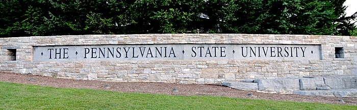

About Penn State World Campus
The advisers play a really important part; they really seem to care about you, leading you in the right direction and helping you pick classes.
They were very important in guiding me over the course of my program.
Cynthia Stoichess
Cynthia Stoichess

We believe that knowledge empowers people to do great things in this world.
We also believe that you shouldn't have to put your life on hold to gain that knowledge.
The idea of distance education is not a new concept for us.
We've been offering Penn State courses at a distance for more than 100 years.
In 1892, Penn State founded one of the nation's first correspondence courses.
And in 1998, we were one of the first major accredited universities to provide online education.
At Penn State World Campus, our mission is making sure you have access to a quality academic experience,
even if you have job and family obligations to fulfill.
If you can not come to one of our brick-and-mortar campuses, we'll bring our campus to you.
We are... convenient, flexible, quality
Our online courses are the same academically challenging courses taught on campus.
Yet our online courses are flexible the asynchronous format allows you to learn at your convenience without stepping onto a campus.
And in the end, the degree or certificate you earn as a World Campus student is identical to the one awarded to all of our Penn State graduates
on campus.
We are... passionate, driven, achievers
Our students come from all 50 states, more than 60 countries, and 7 continents,
yet they share the goal of making their lives better through education.
We are... world-renowned faculty
Our faculty, the same faculty who teach on campus, are well-respected leaders in their fields and are renowned experts in the
subjects they teach. They are also committed to making sure you get a quality academic experience in your online courses.
We are... caring, dedicated
Our staff understands that adult students deal with outside responsibilities and challenging life circumstances.
We are there to help you achieve your personal and professional goals.
We are... Penn State online.